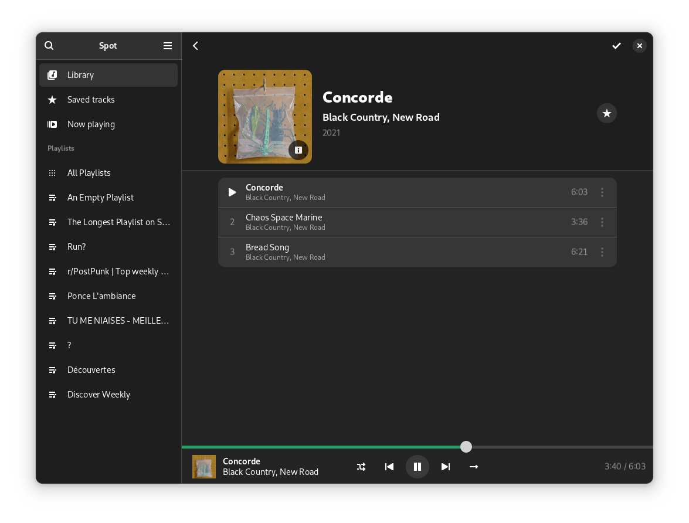

i occasionally contribute to (primarily GNOME-adjacent) open source software with UI/UX, as well as graphic design.
here are some things i had a hand in.
icons
app contributions
Spot - native, beautiful and responsive Spotify client for GNOME.
Bottles - manager for Wine prefixes.
design stuffs